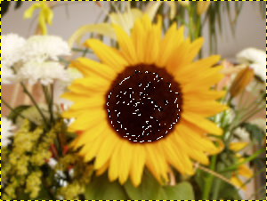
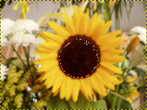
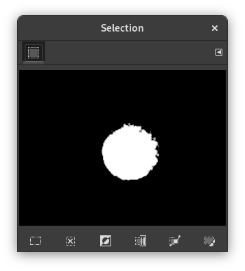

This command removes the holes of a selection. Holes are unselected or partially selected areas in the selection.
You can access this command from the main menu through Select → Remove Holes.
Figura 16.31. A selection and the Selection Editor

Selection using the Fuzzy Select tool.
The Selection Editor shows several holes.
Figura 16.32. Remove Holes applied and the Selection Editor

Remove Holes applied.

Holes disappeared.